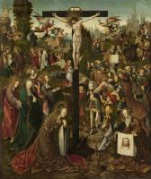

| Christ Appearing to Mary Magdalen as a Gardener
1507
|
 | Christ Taking Leave of His Mother
1507
|
|  | Crucifixion
1510
|
 | Triptych
1510-15
|
 | Crucifixion with Donors and Saints
1515
|
 | The Adoration of the Christ Child
1515
|
 | Crucifixion with six scenes from the Passion of Christ
1515
|
 | Triptych of the Adoration of the Magi
1517
|
 | Sts Christopher and Anthony
1517
|
 | Mary Magdalen
1519
|
 | Saint Barbara
1520
|
 | Salome
1524
|
 | Saul and the Witch of Endor
1526
|
 | The temptation of Christ
1526-28
|
 | Man of Sorrows
|
 | The birth of the Virgin Mary
|